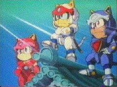

Kyatto Ninden Teyandee

Table of Contents
|
Series Information
|
Nintendo Games
Know in the US under the name
Samurai Pizza Cats
. No other information available at this time.
Other Resources
Anime Web Turnpike: Samurai Pizza Cat Links
(you have to scroll down a bit)
Anime Video Game Resource Center © 1998 by
Luis A. Cruz